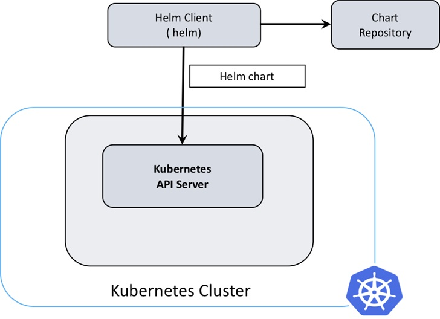
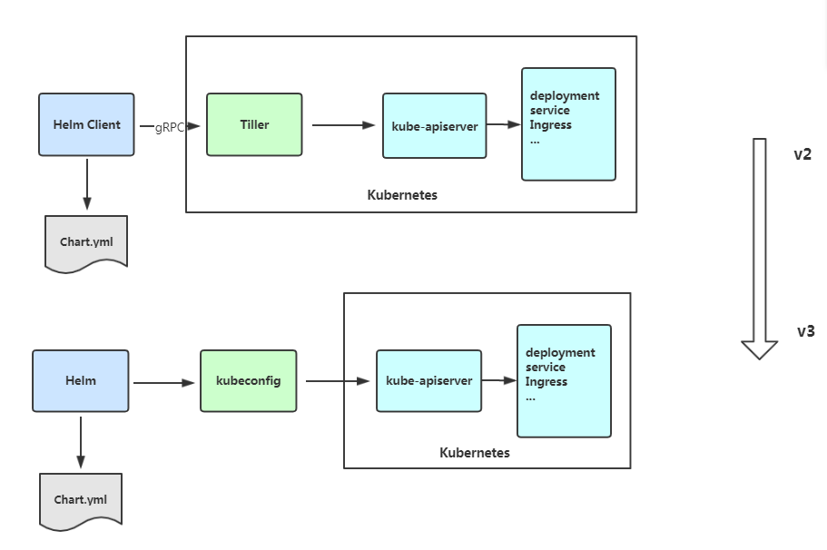

helm 相关
一、快速安装
wget https://get.helm.sh/helm-v3.8.0-linux-amd64.tar.gz
tar -zxvf helm-*-linux-amd64.tar.gz
cp helm /usr/local/bin/helm
chmod 777 /usr/local/bin/helm
https://github.com/chartmuseum/helm-push releases
wget https://github.com/chartmuseum/helm-push/releases/download/v0.10.2/helm-push_0.10.2_linux_amd64.tar.gz
HELM_PUSH=${HOME}/.local/share/helm/plugins
mkdir -p ${HELM_PUSH}
tar -zxvf helm-push-*.tar.gz -C ${HELM_PUSH}
cp registries.yaml /etc/cloud/k8s/
systemctl restart k8s
二、Helm v3


三、Helm 客户端安装（v3.0.0）
1、使用官方脚本安装
curl https://raw.githubusercontent.com/helm/helm/master/scripts/get-helm-3 | bash
或
curl https://raw.githubusercontent.com/helm/helm/master/scripts/get-helm-3 > get_helm.sh
chmod 700 get_helm.sh
./get_helm.sh
2、添加常用 Chart 源
#应该都不需要墙，stable是官方的，aliyuncs最快
helm repo add stable https://kubernetes-charts.storage.googleapis.com
helm repo add aliyuncs https://apphub.aliyuncs.com
helm repo add bitnami https://charts.bitnami.com/bitnami
3、查看 Chart 源
helm repo list
4、查找应用
helm search repo tomcat
5、直接从 Chart 在线安装，需要实现创建动态存储卷等。
helm install my-tomcat aliyuncs/tomcat
NAME: my-tomcat
LAST DEPLOYED: Thu Dec 5 13:56:04 2019
NAMESPACE: default
STATUS: deployed
REVISION: 1
TEST SUITE: None
NOTES:
** Please be patient while the chart is being deployed **
1. Get the Tomcat URL by running:
** Please ensure an external IP is associated to the my-tomcat service before proceeding **
** Watch the status using: kubectl get svc --namespace default -w my-tomcat **
export SERVICE_IP=$(kubectl get svc --namespace default my-tomcat --template "{{ range (index .status.loadBalancer.ingress 0) }}{{.}}{{ end }}")
echo URL : http://$SERVICE_IP/
echo Management URL : http://$SERVICE_IP/manager
2. Login with the following credentials
echo Username: user
echo Password: $(kubectl get secret --namespace default my-tomcat -o jsonpath="{.data.tomcat-password}" | base64 --decode)
6、离线安装
helm pull aliyuncs/tomcat
解压
tar -zxvf tomcat-6.0.5.tgz
tomcat/Chart.yaml
tomcat/values.yaml
tomcat/templates/NOTES.txt
tomcat/templates/_helpers.tpl
tomcat/templates/deployment.yaml
tomcat/templates/ingress.yaml
tomcat/templates/pvc.yaml
tomcat/templates/secrets.yaml
tomcat/templates/svc.yaml
tomcat/.helmignore
修改 tomcat/values.yaml，改为 NodePort 方式，并取消动态存储卷配置。
vim tomcat/values.yaml
service:
type: LoadBalancer
# HTTP Port
port: 80
改为
service:
type: NodePort
# HTTP Port
port: 80
##########################
persistence:
enabled: true
改为
persistence:
enabled: false
离线安装 tomcat
helm install my-tomcat tomcat
NAME: my-tomcat
LAST DEPLOYED: Thu Dec 5 14:06:40 2019
NAMESPACE: default
STATUS: deployed
REVISION: 1
TEST SUITE: None
NOTES:
** Please be patient while the chart is being deployed **
1. Get the Tomcat URL by running:
export NODE_PORT=$(kubectl get --namespace default -o jsonpath="{.spec.ports[0].nodePort}" services aa-tomcat)
export NODE_IP=$(kubectl get nodes --namespace default -o jsonpath="{.items[0].status.addresses[0].address}")
echo http://$NODE_IP:$NODE_PORT/
2. Login with the following credentials
echo Username: user
echo Password: $(kubectl get secret --namespace default aa-tomcat -o jsonpath="{.data.tomcat-password}" | base64 --decode)
四、常用功能
1、创建一个 Chart 模板
helm create test
2、打包 Chart 模板
helm package test
3、查看 Chart 信息
helm show chart test-0.1.0.tgz
4、先移除原先的仓库
helm repo remove stable
5、添加新的仓库地址
helm repo add stable https://kubernetes.oss-cn-hangzhou.aliyuncs.com/charts
6、更新仓库
helm repo update
五、使用 harbor 作为仓库存储 Charts
https://github.com/goharbor/harbor-helm
1、添加 harbor repo
helm repo add goharbor https://helm.goharbor.io
2、创建命名空间 test（可以跳过）
kubectl create namespace test
3、查看当前context（可以跳过）
kubectl config current-context
4、设置 context 指定对应的 namespace，不指定使用的是 default（可以跳过）
kubectl config set-context <current-context> --namespace test
这里是因为，helm 3 开始helm 3 的执行权限和kubectl config 的权限是一致的，通过kubectl config的方式来控制helm 3 的执行权限。
5、可以提前拉取以下镜像（harbor-1.2.3）
docker pull goharbor/chartmuseum-photon:v0.9.0-v1.9.3
docker pull goharbor/redis-photon:v1.9.3
docker pull goharbor/clair-photon:v2.1.0-v1.9.3
docker pull goharbor/notary-server-photon:v0.6.1-v1.9.3
docker pull goharbor/notary-signer-photon:v0.6.1-v1.9.3
docker pull goharbor/harbor-registryctl:v1.9.3
docker pull goharbor/registry-photon:v2.7.1-patch-2819-2553-v1.9.3
docker pull goharbor/nginx-photon:v1.9.3
docker pull goharbor/harbor-jobservice:v1.9.3
docker pull goharbor/harbor-core:v1.9.3
docker pull goharbor/harbor-portal:v1.9.3
6.1、安装 harbor， 关闭数据卷挂载，并使用 NodePort 方式进行访问。
helm -n test install harbor goharbor/harbor \
--set persistence.enabled=false \
--set expose.type=nodePort \
--set expose.tls.enabled=false \
--set externalURL=http://192.168.0.11:30002
参数说明：
- persistence.enabled=false 关闭存储，为了方便操作，真实使用时需要挂在存储
- expose.type=nodePort 使用 NodePort 访问
- expose.tls.enabled=false 关闭tls
- externalURL=http://192.168.0.11:30002 设置登录 harbor 的外部链接
6.2、配置 harbor 使用 Ceph 持续存储（根据情况可选）
查看已有的 storageclasses
kubectl get sc
NAME PROVISIONER AGE
ceph-rbd ceph.com/rbd 8h
下载 harbor
helm pull goharbor/harbor
解压
tar -zxvf harbor-1.2.3.tgz
vim harbor/values.yaml
expose:
type: nodePort
tls:
enabled: false
externalURL: http://192.168.0.11:30002
persistence:
persistentVolumeClaim:
registry:
# 所有 storageClass 都修改为以下内容
storageClass: "ceph-rbd"
部署
helm install harbor harbor/
7、访问界面登录 http://192.168.0.11:30002
默认账号密码 admin/Harbor12345
8、添加仓库 chart_repo
9、创建用户 hl/XXX
10.1、添加 repo 到 helm
helm repo add hl http://192.168.0.11:30002/chartrepo/chart_repo
10.2、添加 repo 到 helm，及添加认证信息（根据情况可选）
helm repo add hl http://192.168.0.11:30002/chartrepo/chart_repo --username hl_user --password hl_password
helm repo add --ca-file /etc/docker/certs.d/local.com/ca.crt --username=admin --password=qwe local https://local.com/chartrepo/k8s
11、安装 helm-push 插件
helm plugin install https://github.com/chartmuseum/helm-push
12、push charts 到 harbor 里面
helm push grafana-0.0.2.tgz test --username hl --password xxx
六、其他
1、helm hub
2、helm 官网
3、通过 curl 创建仓库
curl -u "user:password" -H "Content-Type: application/json" -X POST -d '{"project_name": "test", "public": true}' https://192.168.0.127:5000/api/v2.0/projects -k
4、registry相关操作
1.登录
helm registry login my.harbor.com:5000 --username user --password password --insecure
2.打包、推送
helm package template
helm push template-1.0.0.tgz oci://my.harbor.com:5000/test --insecure-skip-tls-verify
3.拉取
helm pull oci://my.harbor.com:5000/test/template --version 1.0.0
5、部署
helm upgrade --install --create-namespace \
-n hl \
--set-json 'image={"repository":"gradiant/jupyter","tag":"6.0.3"}' \
--set replicaCount=1 \
--set-json 'resource={"requests":{"cpu":"100m","memory":"128Mi"},"limits":{"cpu":"100m","memory":"128Mi"}}' \
--set-json 'containerPorts=[{"name":"http","port":80}]' \
--set-json 'service={"type":"ClusterIP","ports":[{"name":"http","port":80,"targetPort":"http"}]}' \
--set-json 'ingress={"enabled":true,"hosts":[{"host":"hl.test.ingress","paths":[{"path":"/","port":80}]}]}' \
hl \
oci://my.harbor.com:5000/test/template --version 1.0.0
helm pull oci://my.harbor.com:5000/test/gradiant/jupyter --version 6.0.3
helm upgrade --install -n {NAMESPACE} sagflow .
helm install -n {NAMESPACE} -f values.yaml jupyter jupyter-6.0.3.tgz